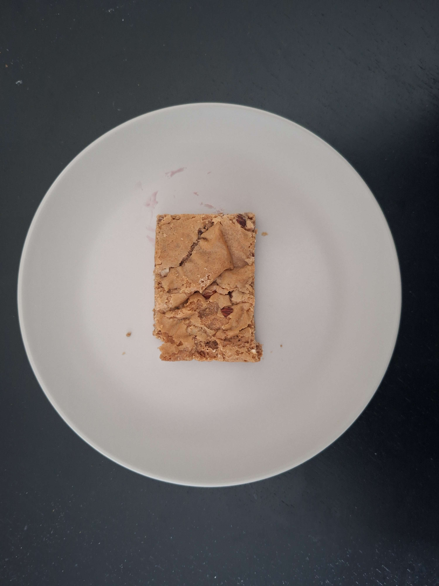
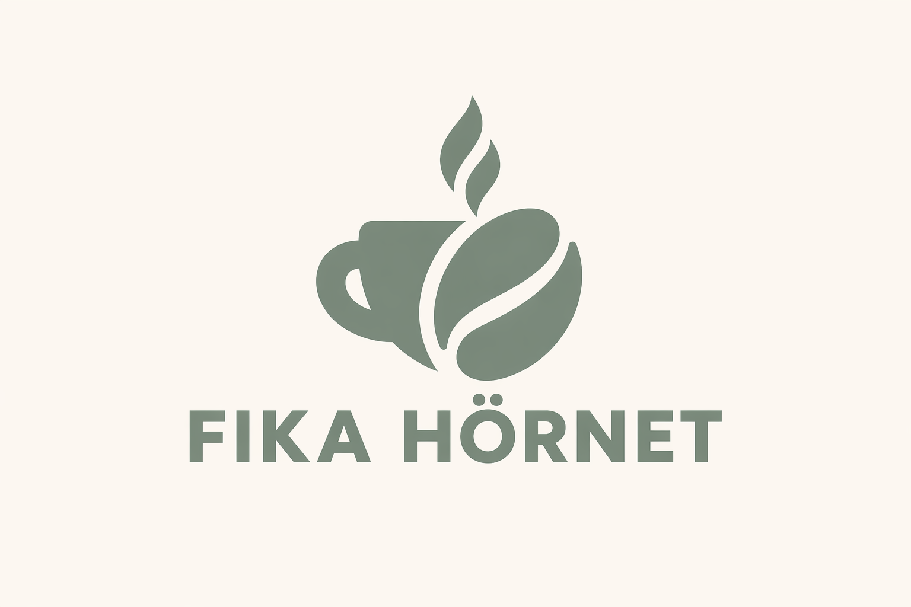
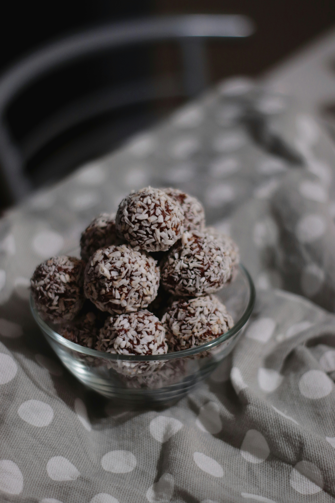
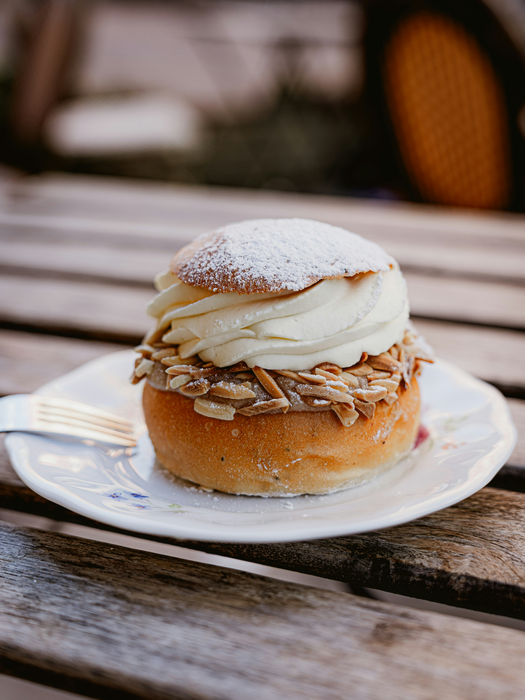

Kolakaka
Thin, crisp caramel cookies with a buttery texture and a hint of golden syrup. Sweet, crunchy, and irresistibly moreish.
20 kr


Thin, crisp caramel cookies with a buttery texture and a hint of golden syrup. Sweet, crunchy, and irresistibly moreish.
20 kr

A rich, no-bake chocolate treat made with cocoa, oats, and butter, rolled in coconut flakes. Deep, indulgent, and nostalgic.
20 kr

A soft, golden bun infused with smooth vanilla, lightly sweet and perfectly fluffy. A comforting classic with a delicate aroma.
35 kr

Soft cardamom bun filled with almond paste and whipped cream, dusted with powdered sugar.
45 kr

Buttery shortbread cookie with a sweet raspberry jam center.
20 kr